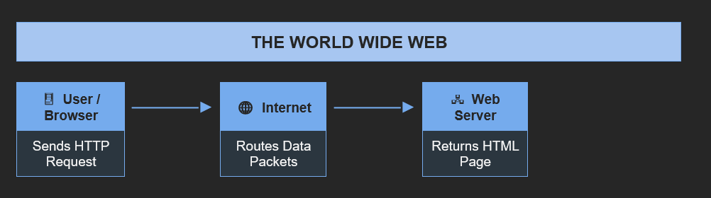

World Wide Web (WWW)

The World Wide Web (WWW), commonly known as the Web, is a global information system of interlinked hypertext documents and multimedia resources accessible via the Internet. Invented by Sir Tim Berners-Lee in 1989 at CERN, the Web uses web browsers to navigate pages connected by hyperlinks. It is important to distinguish the Web from the Internet: the Internet is the underlying global network infrastructure, while the Web is one of many services that runs on top of it. The Web operates through three core technologies: HTML (content structure), HTTP (transfer protocol), and URLs (addresses). When a user types a web address, their browser sends an HTTP request to a web server, which returns the requested page.